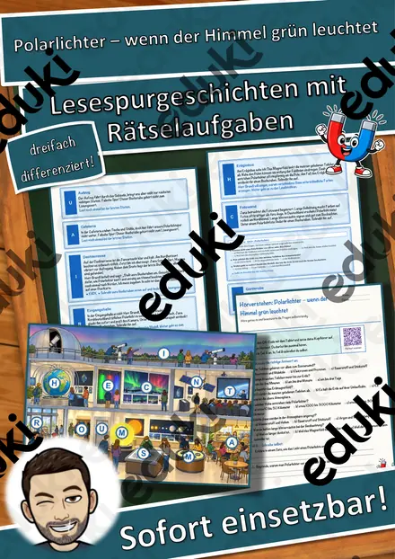
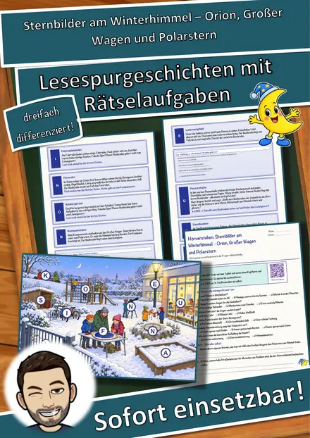
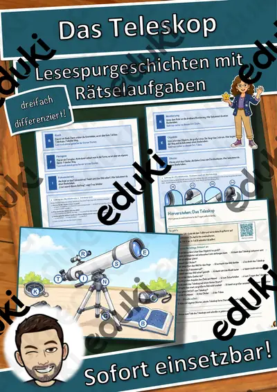
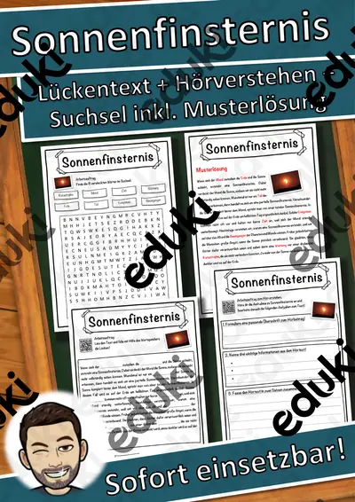

Sterne, Sternbilder und Astronomie: Arbeitsblätter für Klasse 4–8 (Sachunterricht)
Der Sternenhimmel öffnet den Blick über den Alltag hinaus. Sternbilder, Polarstern und Mondphasen lassen sich ohne großes Gerät erkunden.
Die Begriffsliste dieser Einheit: Sternbilder, Polarstern, Mondphasen, Teleskop, Polarlicht und Astronomie.
Die Lehrpläne der Länder sehen das Thema im Fach Sachunterricht vor, in der Regel in den Klassen 4 bis 8. Als Ziel gilt: die Schülerinnen und Schüler erkennen Sternbilder und beschreiben Mondphasen.
Wer Sterne, Sternbilder und Astronomie auf mehrere Stunden verteilt, startet mit Sternbilder, übt an Mondphasen und schließt mit Polarlicht ab. Alle Blätter sind kopierfertig und enthalten Lösungen für die schnelle Kontrolle. Zur Differenzierung eignen sich die Lesespurgeschichten mit ihren drei Niveaustufen.
21 passende Materialien stehen bereit, etwa Sternbilder Projektion, Persönlichkeiten-Kartei Astronomie und Raumfahrt und Polarlichter. Vertreten sind 3 Lesespurgeschichten und 5 Lückentexte mit Hörverstehen; die Stufen reichen über Klasse 3–9. Ein Mondtagebuch über einen Monat zeigt die Phasen ganz von selbst.
Das gehört zum Thema
Passende Arbeitsblätter und Materialpakete

Sternbilder Projektion - Materialpaket - Sternbildsucher #edukiknaller2021

Polarlichter – wenn der Himmel grün leuchtet – Lesespurgeschichte mit Rätselaufgaben (Klasse 8)

Sternbilder am Winterhimmel – Orion, Großer Wagen und Polarstern – Lesespurgeschichte mit Rätselaufgaben (Klasse 4)

Das Teleskop – Lesespurgeschichte mit Rätselaufgaben (Klasse 8)

Sonnenfinsternis Lückentext mit Wortspeicher Hörverstehen und Suchsel

Polarstern Lückentext mit Wortspeicher Hörverstehen und Suchsel

Polarlicht Lückentext mit Wortspeicher Hörverstehen und Suchsel

Teleskop Lückentext mit Wortspeicher Hörverstehen und Suchsel

Astronomie Lückentext mit Wortspeicher Hörverstehen und Suchsel

Persönlichkeiten-Kartei Astronomie und Raumfahrt – Lesekartei mit 22 Persönlichkeiten, 3-fach differenziert (Klasse 3–6)

Sternbildsucher - Projektor Sternzeichen Zwillinge

Sternbildsucher - Projektor Sternzeichen Widder

Sternbildsucher - Projektor Sternzeichen Waage

Sternbildsucher - Projektor Sternzeichen Stier

Sternbildsucher - Projektor Sternzeichen Steinbock

Sternbildsucher - Projektor Sternzeichen Skorpion

Sternbildsucher - Projektor Sternzeichen Schütze

Sternbildsucher - Projektor Sternzeichen Löwe

Sternbildsucher - Projektor Sternzeichen Krebs

Sternbildsucher - Projektor Sternzeichen Jungfrau

Sternbildsucher - Projektor Sternzeichen Fische
Häufige Fragen
Für welche Klassenstufe passen die Arbeitsblätter zu Sterne, Sternbilder und Astronomie?
Passend sind Klasse 3–9. Von den 21 Titeln wenden sich die meisten an Klasse 6, einige lassen sich differenzierend auch in benachbarten Stufen nutzen.
Welche Inhalte decken die Materialien zu Sterne, Sternbilder und Astronomie ab?
Die Materialien arbeiten an Sternbilder, Polarstern und Mondphasen und gehen dann weiter zu Teleskop, Polarlicht und Astronomie. Vorab lohnt ein Blick in den Lehrplan des eigenen Bundeslandes.
Wie setze ich Sterne, Sternbilder und Astronomie im Unterricht ein?
Ein Mondtagebuch über einen Monat zeigt die Phasen ganz von selbst. So entsteht aus den Blättern eine kleine Einheit, die sich auf zwei bis drei Stunden verteilen lässt.
Mehr Material nach Fach und Klasse
- Alle Materialien Kunst
- Arbeitsblätter Kunst Klasse 4
- Arbeitsblätter Kunst Klasse 5
- Arbeitsblätter Kunst Klasse 6
- Arbeitsblätter Kunst Klasse 7
- Arbeitsblätter Kunst Klasse 8
- Unterrichtsmaterial Klasse 4
- Unterrichtsmaterial Klasse 5
- Unterrichtsmaterial Klasse 6
- Unterrichtsmaterial Klasse 7
- Unterrichtsmaterial Klasse 8
Verwandte Lehrplanthemen
- Sonnensystem und Planeten (Sachunterricht, Klasse 3–8)
- Medien und Internet (Sachunterricht, Klasse 3–9)
- Wasserkreislauf (Sachunterricht, Klasse 3–5)
- Bauernhof und Nutztiere (Sachunterricht, Klasse 1–4)
- Berufe und Berufswahl (Sachunterricht, Klasse 1–10)